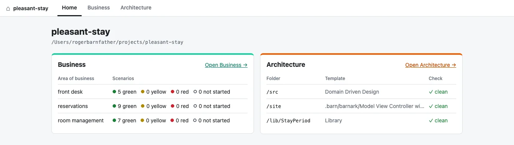

Build a barn. Everything under one roof.
A barn is a PHP project with its story map and its architecture ready to use. One command builds it, one app shows what the business needs and what shape the code is in, side by side, and everything it knows is committed with your code.

Home, Business and Architecture.
Home is where the barn stands: every area of business with its scenarios counted by colour, and every tracked folder with whether it still fits its template.
Business is Barnspec: the story map, its scenarios and the work behind them. Architecture is Barnark: your folders, their templates and any switch you are planning.
The two are kept apart on purpose. Each speaks its own language, and the home page is where you see both at once.
Start fresh, or bring a project in.
Build a barn in a new folder: a Composer project with src/ scaffolded from the architecture you choose, an empty story map and a git repository, all installed.
Adopt a project you already have. Its Barnspec and Barnark files move into the barn, everything else stays where it is, and you see every change before it is made.
$ barn build my-shop # a new barn
$ cd my-project
$ barn adopt # an existing project
$ barn gui # Home, Business, Architecture
$ barn status # the home page, in the terminalWhat a barn is made of.
For when you want the detail.
The barn folderOne place, committed with your code
my-shop/
.barn/
barn.json # marks the barn and names it
barnspec.json # where generated test ports go
barnspec/ # the story map
barnark-workspace.json # tracked folders and their templates
barnark/ # your own templates, switches in progress
composer.json
src/
tests/Every tool finds the barn from any folder inside it, so barnspec, barnark template:check, port-generator and scenario-bridge all work from deep in src/. Outside a barn each tool works as it always has.
BuildingWhat barn build asks and makes
It asks for the barn’s name, its Composer package, its root namespace and the architecture for src/, suggesting each from the folder’s name, with Domain Driven Design as the default. Every answer can be given as an option instead. The folder has to be new or empty.
$ barn build shop --package=acme/shop --namespace="Acme\Shop" --template=LibraryIt runs git init without committing anything and then composer install; --no-install leaves that to you.
AdoptingMoving an existing project in
barnspec.json, .barnspec/, barnark-workspace.json and .barnark/ move into .barn/, and any custom template the workspace names is renamed to match. A project with only one of the tools is adopted with what it has. If any move cannot be made, nothing is touched.
The appOne server, three tabs
barn gui serves the Barnspec and Barnark apps as the Business and Architecture tabs, with the home page beside them, from one local server. Started outside a barn, it offers to build one, showing composer install as it runs, or to adopt the project you are in.
Build your first barn.
Barn needs PHP 8.5 with the ds extension, Composer and git.
$ composer global require rmb32/barn
$ barn build my-shop
$ cd my-shop && vendor/bin/barn gui